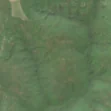
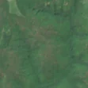

3,1 ha de pădure schimbată lângă Rotărești
Între vara lui 2025 și 24 aprilie 2026, pe aproximativ 3,1 ha de pădure din comuna Săulești, lângă Rotărești, județul Gorj, imaginile Sentinel-2 arată că vegetația a dispărut sau s-a schimbat puternic. În registrul public există o autorizație de tăiere pentru acest loc.
Autorizația de tăiere
probabil cu autorizație
Am găsit o autorizație de tăiere pentru locul ăsta, dar registrul nu ne lasă să confirmăm că acoperă exact tăierea pe care o vedem. Amenajamentul nu publică harta parcelei autorizației, deci nu știm exact unde e. De cele mai multe ori o acoperă.
Ce se vede în poze: În poza detaliată, zona marcată este acoperită de pădure deasă. În pozele «înainte» și «după» nu se vede un loc golit cu margini clare, doar o schimbare foarte slabă de culoare, deci nu pot spune sigur ce s-a întâmplat.


Înainte și după: Copernicus Sentinel-2, 10 m pe pixel, conturul zonei cu portocaliu. Poza detaliată (Esri World Imagery) e de acum 1–4 ani: arată ce era acolo înainte, nu tăierea.
Pe scurt
- Identificator
- 20260424_44863_23476
- Locul
- Rotărești, comuna Săulești, județul Gorj (SIRUTA 81816)
- Coordonate (centru)
- 44.86268, 23.47587 · Google Maps · OpenStreetMap
- Suprafața
- 3,1 ha (din pixeli de 10 m; ± câțiva pixeli pe margine)
- Pădurea întreagă
- în vara lui 2025 (de atunci, nori sau iarnă)
- Prima imagine cu schimbarea
- 24 aprilie 2026
- S-a lărgit
- 24 aprilie 2026
- Imagini în care se vede schimbarea
- 14
- Cât de sigur e semnalul din satelit
- scăzută
- Autorizația cea mai apropiată
- APV 2400153710230 · Ocolul Silvic Cărbunești, valabilă 21 septembrie 2024 – 30 decembrie 2024, la 0 m de zonă
- Terenul
- în afara amenajamentelor silvice publicate (pășune, mal de apă sau pădure privată fără amenajament în registru)
- Garda Forestieră
- Râmnicu Vâlcea
Dacă vrei să verifici sau să sesizezi
- Pădurile din județul Gorj sunt în grija Gărzii Forestiere Râmnicu Vâlcea, care controlează tăierile și dă amenzile.
- Autorizația găsită în zonă e emisă de Ocolul Silvic Cărbunești.
- Formularul Gărzii Forestiere Naționale primește sesizări și fără nume. Trimite linkul acestei pagini, coordonatele și pozele. Dacă tăierea e în desfășurare, sună la 112.
- Autorizațiile și transporturile de lemn se pot căuta în Inspectorul Pădurii.
Pagina arată ce se vede din satelit și ce scrie în registrul public; nu e o dovadă în sine.
Cum citezi zona
Linkul acestei pagini nu se schimbă. Dacă zona iese vreodată de pe hartă, pagina rămâne, cu data și cu ce știam despre ea.
Pădurea RO, zona 20260424_44863_23476: 3,1 ha, Rotărești, comuna Săulești, județul Gorj; schimbare văzută din satelit între vara lui 2025 și 24 aprilie 2026. https://iliemihai.github.io/padurea-ro/zona/20260424_44863_23476/ (consultat la [data]). Date: CC BY 4.0.
Datele zonei: GeoJSON · toate zonele: date deschise · licența CC BY 4.0.
Istoricul zonei pe hartă
Starea se poate schimba când registrul publică o autorizație sau când analistul vede poze mai bune. O ținem aici, ca un link citat să arate și ce spuneam atunci.
Pe hartă cel târziu din 5 noiembrie 2026.
- 5 noiembrie 2026 – azi · probabil cu autorizație
Detalii tehnice, pentru verificare
De ce acest nivel de încredere:
- văzută schimbată în 14 imagini diferite
- peste 3 ha
- ultima dată am văzut-o intactă în vara lui 2025 (de atunci, nori sau zăpadă)
- fără părerea AI
Ce a văzut analistul cu context: Poza detaliată din 2024 arată coronament închis (81% în 2000, 100% copaci), fără drum sau așezare aproape (661 m drum). În Sentinel-2 zona are o nuanță ușor mai brună și pătată, similară deja în 2025-08-30, fără sol gol, margini drepte sau continuare în afara conturului. Autorizația APV se suprapune doar 5%, iar petele brune din afara conturului pot indica uscare sau dăunători. Dovezile nu susțin nici tăiere rasă, nici rărire în mod clar.
- Placa Sentinel-2
- 34TFQ
- NDVI de referință
- 0.81
- NBR de referință
- 0.58
- Scăderea în pădurea din jur
- 0.05
- Persistență
- 1.0
- NDVI / NBR după
- 0.676 / 0.402
- Analistul cu context (model)
- neclar · 0.4
Cum se calculează fiecare: metodologia.
Pune harta zonei într-un articol
Copiază codul în articol (merge în majoritatea site-urilor de știri). Sau pune doar linkul: WhatsApp, Facebook și X arată singure poza zonei.